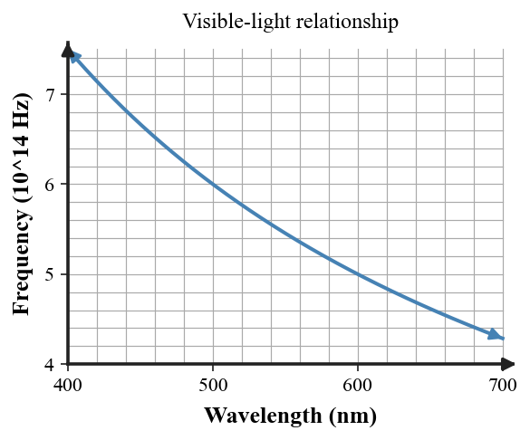

1. What two changing fields make up an electromagnetic wave?
2. For light traveling through vacuum, which three quantities are related by $c=f\lambda$?
3. Where does visible light belong relative to radio, infrared, ultraviolet, and other electromagnetic waves?
4. Classify a clear window, wax paper, and a wooden door as transparent, translucent, or opaque.
5. Explain what must happen to a light path for a shadow to appear on a screen.
6. The graph represents the wavelength–frequency relationship for visible light. Describe the trend and explain why it is consistent with $c=f\lambda$ when light speed is fixed.

7. Light in vacuum has wavelength $5.0\times10^{-7}$ m. Calculate its frequency using $c=3.0\times10^8$ m/s.
8. A pulse of light travels $1.2\times10^6$ km through space. Using $c=3.0\times10^5$ km/s, determine the travel time.
9. Two electromagnetic waves travel through vacuum. Wave A has twice the frequency of Wave B. Compare their wavelengths and justify your answer.
10. A frosted panel allows light through but does not preserve a sharp view of objects behind it. Classify the panel and connect the evidence to its light interaction.
11. A student says, “Transparent materials do not interact with light because light passes through them.” Critique the claim using transmission, speed, or absorption evidence.
12. Another student claims that a book is visible because the eye sends light toward the book. Replace this with a ray-based explanation of how the book is seen.
13. Which description correctly classifies light?
14. Compared with 650 nm red light in vacuum, 450 nm blue light has
15. The visible band is
16. Which sample is most likely translucent?
17. A card creates a shadow on a wall because it
18. You see a non-glowing notebook because
19. If frequency increases by a factor of 3 while light speed stays fixed, wavelength becomes
20. Which observation best separates transparent from translucent?